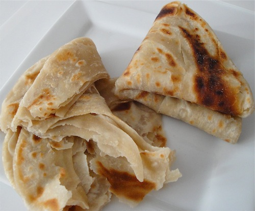

Chapati

Soft, flaky layered flatbread eaten with beans, stews, or tea. The layers come from rolling the dough with oil, coiling it, and rolling it out again. Being honest,
these are the kinds of recipies that take 4 hours to follow, whilst eating only take half an hour. but good things usually are like that so no worries.
The recipie takes you through all the steps from nothing but flour, salt, and sugar until you have a stack of delicious chapatis to feast upon.
Ingridients
- 3 cups all purpose flour
- 1 teaspon salt
- 1 tablespoon sugar
- 3 tablespoons oil, plus extra for layering and frying
- 1 cup warm water
Steps
- Mix the flour, salt, and sugar in a large bowl.
- Add the oil and warm water gradually and knead into a soft dough for 10 minutes.
- Cover and rest the dough for 30 minutes.
- Divide the dough into 8 balls.
- Roll each ball into a circle, brush with oil, then roll it up like a rope and coil it into a spiral.
- Rest the coils for 10 minutes, then roll each one flat again.
- Cook on a hot pan, turning and brushing with oil, until both sides have golden spots.
- Stack the cooked chapatis under a cloth to keep them soft.